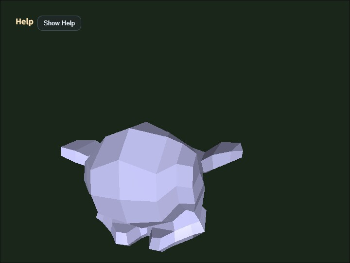

json_loader
English | 日本語

Overview
- This sample loads and displays the
ModelAssetJSON file specified inmain.jsas-is - JSON exported by
gltf_loaderorcollada_loaderwith theDkey can be shown again in this sample by matching the file name - It calls the JSON facade from
WebgApp.loadModel(), making it a sample that obtainsModelAssetdata and runtime objects without caring about format differences - The included
modelasset.jsoncontains two clips,ArmatureAction_skeleton_0andArmatureAction_skeleton_0_copy, created by duplicating the same source clip
How to Run
- Open ./json_loader.html
- Use a browser with WebGPU support, and check the Help Panel and CommandPalette together with the sample when needed
webg Features Used
WebgApp: standard initialization, render loop, and Help Panel displayCommandPalette: groups clip control, wireframe, screenshot, JSON export, and camera resetWebgApp.loadModel: high-level entry point for the JSON facadeModelLoader: bundles JSON load / validate / build / instantiateModelAsset.load: loads the JSON fileModelAsset.getClipNames: inspects the clip list contained in the JSONModelAsset.build: constructs shapes, skeletons, and animations from the JSONModelBuilder.animationMap: accesses runtime animations from clip IDsbuild()result helpers:instantiate() / createNodeTree() / bindAnimationBindings() / getAnimation() / getAnimationNames() / startAllAnimations() / playAllAnimations() / setAnimationsPaused()EyeRig(type="orbit"): orbit viewpoint based on the bounding box
Checkpoints
- Confirm that the JSON specified by
MODEL_ASSET_FILEpasses the validator and can be rendered directly - Confirm that the Help Panel displays
file / model / orbit / target / anim / clip / wireframestate so the information needed for a viewer can be followed on screen - Confirm that inside the sample, the runtime returned by the facade is used to unify node restoration and animation binding, and that the connection can be checked through
getAnimation()/getAnimationNames()instead of directanimationMapaccess - Confirm that
4 / 5switches the target clip and that1 / 2 / 3act on the currently selected clip - Confirm that
4 / 5can switch betweenArmatureAction_skeleton_0andArmatureAction_skeleton_0_copy - Confirm that
1can restart the selected clip by name withrestartAnimation(clipId) - Confirm that
2 / 3can pause and resume the selected clip individually withpauseAnimation(clipId)/resumeAnimation(clipId) - Confirm that the camera distance is set automatically from the bounding-box size so the whole model remains in view
- Confirm that
Shift + ArrowandShift + Dragmove the camera target in parallel, making it easy to bring details to the center - Confirm that
Wtoggles wireframe,Ssaves a screenshot, andRrestores the initial framing - Confirm that the CommandPalette can run clip replay / pause / resume / selection, wireframe, screenshot, JSON export, and camera reset
- Confirm that the Help Panel is used for current values and operation hints, while the CommandPalette is used for changing settings and running commands
Controls
- Drag / arrow keys: orbit camera rotation
Shift + Drag / arrow keys: pan the camera target- Mouse wheel /
[ / ]: zoom Space: pause animation1: replay the selected clip2: pause the selected clip3: resume the selected clip4: select the previous clip5: select the next clipW: toggle wireframeS: save a screenshotD: download the current JSON againR: return the camera to the initial position based on the bounding box/or double tap the canvas: open the CommandPalette